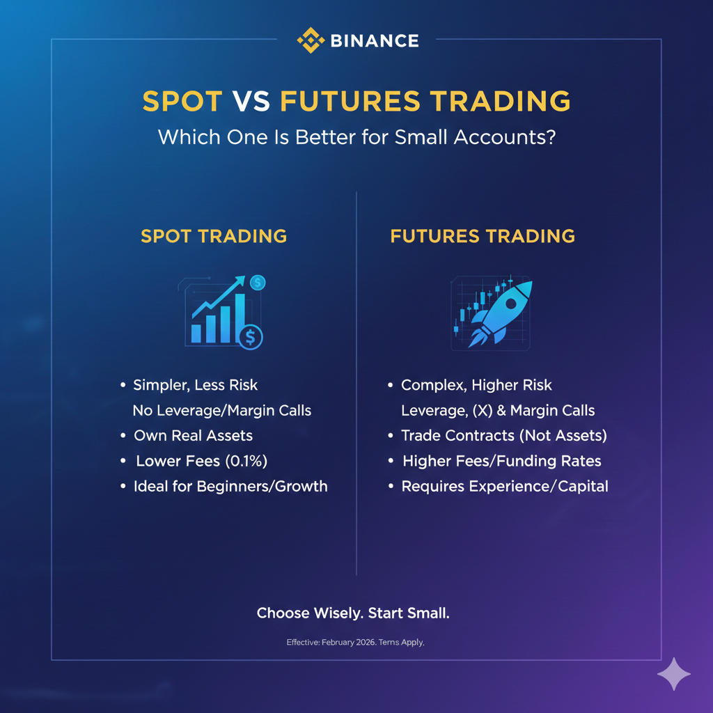

Spot vs Futures Trading – Which One Is Better for Small Accounts in 2026?
One of the most common questions among new and small traders is whether spot trading or futures trading is better for a small account. While futures trading looks attractive because of leverage and fast profits, it also carries much higher risk and hidden costs.
In this guide, we compare spot trading and futures trading specifically for small accounts and explain which option makes more sense in 2026.
1. What Is Spot Trading?
Spot trading means you buy and sell real cryptocurrencies at the current market price. When you buy on the spot market, you actually own the asset and can withdraw it to your wallet.
There is no leverage, no liquidation price and no borrowing involved. Your maximum possible loss is limited to the amount you invested.
2. What Is Futures Trading?
Futures trading allows you to speculate on the price of a cryptocurrency without owning it. You open long or short positions using leverage, which means you trade with borrowed funds.
While leverage can increase profits, it also increases losses and introduces liquidation risk. If the market moves against your position, your account can be liquidated very quickly.
3. Capital Requirements for Small Accounts
For small accounts, capital efficiency matters a lot.
Spot trading requires you to fully pay for the asset you buy. If you have a $100 account, you can only buy up to $100 worth of crypto.
Futures trading allows you to control larger positions using leverage. A $100 account can control a $500 or even $1,000 position depending on the leverage used.
However, higher exposure does not mean higher probability of success. It only increases both profit and loss.
4. Risk and Liquidation
The biggest difference between spot and futures for small traders is liquidation.
In spot trading, your position is never force-closed by the exchange. You can hold through volatility as long as you want.
In futures trading, if your margin is no longer sufficient to maintain the position, the exchange automatically liquidates it. This often happens during fast market moves and wicks.
For small accounts, even small price fluctuations can trigger liquidation when leverage is used.
5. Fees and Hidden Costs
Spot trading fees are usually simple maker and taker fees.
Futures trading includes:
- Trading fees (maker and taker)
- Funding fees between long and short positions
- Slippage during fast market movements
Funding fees are often ignored by beginners but can slowly drain small accounts, especially when holding positions for many hours or days.
6. Psychological Pressure
Futures trading creates much stronger emotional pressure than spot trading.
Watching leveraged positions move quickly in profit and loss often leads to emotional decisions, early exits and revenge trading.
For small accounts, one or two emotional trades can completely wipe out weeks of progress.
7. Spot vs Futures for Bots and Automation
Many small-account traders try to use trading bots or automation to improve consistency.
Spot trading bots are usually simpler and safer. They do not deal with liquidation prices, margin management or funding fees.
Futures bots must handle:
- Position sizing based on leverage
- Liquidation price monitoring
- Funding rate impact
- Partial fills and fast volatility
For small accounts and lightweight automation setups, spot trading bots are generally more stable and easier to manage.
8. Direct Comparison Table
| Feature | Spot Trading | Futures Trading |
|---|---|---|
| Asset ownership | Yes | No |
| Leverage | No | Yes |
| Liquidation risk | No | Yes |
| Funding fees | No | Yes |
| Complexity | Low | High |
| Stress level | Lower | Higher |
| Best for beginners | Yes | No |
9. Which One Is Better for Small Accounts?
For most small traders in 2026, spot trading is the better starting point.
Spot trading provides a simpler structure, predictable costs and no liquidation risk. This allows small accounts to focus on learning market behavior, strategy development and proper risk management.
Futures trading can be useful later, once a trader has:
- Consistent profitability in spot trading
- Strong risk management rules
- Clear understanding of funding rates and leverage
- Enough capital to absorb drawdowns
In practice, many small accounts fail in futures trading not because of bad strategies, but because leverage and liquidation amplify normal mistakes.
If your goal is steady growth and long-term survival, spot trading is usually the smarter and more sustainable option for small accounts.